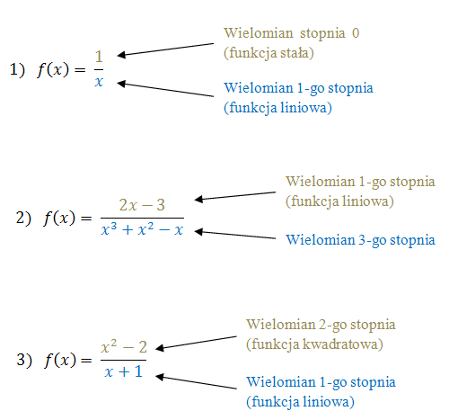

Przed rozpoczęciem nauki o funkcjach wymiernych warto dobrze zrozumieć
wielomiany.
Funkcja wymierna - to taka funkcja, która jest ilorazem dwóch
wielomianów.
Inaczej mówiąc - funkcję wymierną można zapisać w postaci ułamka, który ma
w liczniku i mianowniku wielomiany.
Przykłady funkcji wymiernych:

Funkcje wymierne mogą składać się z sumy kilku wyrażeń wymiernych.
Funkcję wymierną: \[f(x)=\frac{1}{x} + \frac{3x-5}{2x}\] można uprościć:
\[\begin{split} f(x)&=\frac{1}{x} + \frac{3x-5}{2x}\\[6pt] f(x)&=\frac{2}{2x} +
\frac{3x-5}{2x}\\[6pt] f(x)&=\frac{2+3x-5}{2x}\\[6pt] f(x)&=\frac{3x-3}{2x}\\[6pt] \end{split}\]